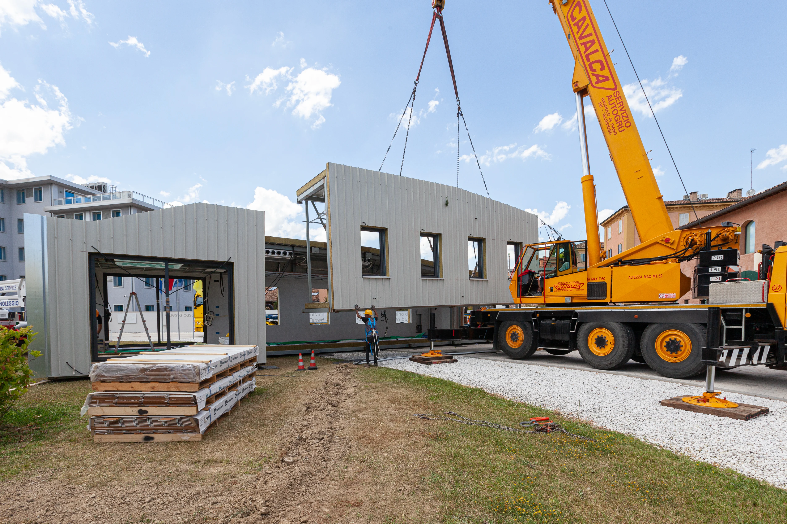

Sistemas de construcción en seco

El universo de la construcción en seco abarca mucho más que perfiles y placas de yeso. La clave para clasificar estos sistemas es entender su función física y mecánica en la obra. La distinción principal que define cómo se calcula un proyecto es la diferencia entre los sistemas estructurales (los que soportan el peso del edificio), los sistemas no estructurales (los que dividen espacios), los sistemas de envolvente (que protegen del clima) y los sistemas modulares (prefabricación total).
📊 El impacto logístico
En Argentina, existe un organismo dedicado exclusivamente a estudiar, estandarizar y promover este método constructivo, llamado Instituto de la Construcción en Seco (INCOSE). Este instituto afirma que una vivienda construida con Steel Framing pesa apenas un 10% en comparación con una obra húmeda tradicional. Esto significa una reducción drástica en el transporte de carga pesada, menor consumo de combustible y un ahorro gigante en la logística integral de la obra.
🏗️ 1. Sistemas estructurales (El esqueleto portante)
Atención: Estos sistemas soportan el peso de la edificación. Transmiten las cargas gravitatorias (techos, entrepisos, mobiliario, personas) y las cargas dinámicas (viento, sismos) hacia las fundaciones. Requieren cálculo de ingeniería civil y perfiles de calibres específicos.

⚙️ Steel Framing
Es un sistema de entramado compuesto por perfiles de chapa de acero galvanizado estructural (calibres de 0.9mm o superiores). Se unen entre sí utilizando tornillos autoperforantes especiales. El galvanizado protege al acero de la oxidación mediante una capa de zinc. Al ser un material inorgánico, no sufre ataques de termitas, no se deforma con la humedad y es completamente incombustible. Es el estándar moderno por su precisión milimétrica.
Ver unidad completa →
🌲 Wood Framing
Es el sistema constructivo predominante en Norteamérica. Consiste en un entramado de listones de madera aserrada, la cual es secada en hornos para garantizar su estabilidad dimensional y tratada con químicos para evitar plagas y hongos. Las uniones se realizan con clavadoras neumáticas y herrajes de acero galvanizado. Su ventaja técnica principal es que la madera es un excelente aislante térmico natural, minimizando los puentes térmicos en la estructura.
Ver unidad completa →
🧩 Paneles SIP (Structural Insulated Panels)
Son Paneles Estructurales Aislantes prefabricados. Funcionan bajo el principio estructural de un sándwich: un núcleo grueso de espuma rígida (generalmente Poliestireno Expandido o EPS de alta densidad) fuertemente adherido con poliuretano entre dos tableros estructurales (comúnmente madera OSB). Al actuar en conjunto, soportan enormes cargas axiales y de flexión, resolviendo la estructura portante y la aislación térmica en un único paso de montaje.

🏭 Alma llena (Acero pesado)
A diferencia del Steel Framing que usa chapa plegada liviana, el sistema de alma llena utiliza perfiles laminados en caliente (como los clásicos perfiles doble T, IPE o W). Estas vigas y columnas macizas se unen mediante soldaduras de alta penetración o bulones estructurales. Se reserva para obras que requieren cubrir grandes luces sin columnas intermedias, como naves industriales, centros comerciales o estadios. Su montaje requiere obligatoriamente maquinaria pesada (grúas).
🧱 2. Sistemas no estructurales (División interior)
Atención: Su función es dividir, distribuir o revestir ambientes interiores. Se fabrican con perfiles de acero de menor espesor y no tienen capacidad portante. Jamás deben recibir cargas de techos ni usarse como muros exteriores sin un tratamiento especial.

Tabiquería Drywall (Placas de yeso)
Estructura conformada por soleras y montantes de chapa galvanizada muy delgada (usualmente calibre 0.52mm). Sobre este esqueleto se atornillan placas de roca de yeso (Durlock, Knauf, Placo). Las juntas entre placas se toman con cinta de papel y masilla para lograr una superficie continua y lisa. Permiten alojar en su interior todas las instalaciones eléctricas y sanitarias de manera rápida y limpia, además de incorporar lana de vidrio para aislación acústica entre habitaciones.
Ver unidad completa →
Cielorrasos suspendidos y desmontables
Sistemas horizontales que se cuelgan de la estructura de techo original (losa o techo de chapa) mediante alambres tensores, varillas roscadas y perfiles perimetrales. Existen de junta tomada (lisos como una pared) o desmontables (cuadrículas con placas apoyadas). Cumplen una triple función: estética, acústica y técnica, ya que crean un "pleno" (espacio oculto) por donde circulan los ductos de climatización, bandejas de cables y cañerías de rociadores contra incendios.
🛡️ 3. Sistemas de envolvente exterior
Estos sistemas se instalan por el lado exterior de la estructura portante. Su función es ser la "piel" del edificio: deben repeler el agua de lluvia, resistir los impactos, tolerar los rayos UV y mejorar la eficiencia energética de la construcción.

🌬️ Fachadas ventiladas
Es el sistema de cerramiento exterior más eficiente que existe. Consiste en fijar un revestimiento (paneles de aluminio, placas cementicias o porcelanatos) sobre una subestructura, dejando una cámara de aire continua entre el revestimiento y la aislación del muro. Por efecto chimenea, el aire caliente asciende y ventila, evitando que el calor del sol ingrese al edificio en verano y controlando la humedad por condensación en invierno.

Siding exterior (Entablillado)
Consiste en la colocación de tablas o lamas superpuestas horizontalmente. Tradicionalmente hechas de madera, hoy en día se fabrican principalmente en fibrocemento (que imita la veta de la madera pero no se pudre ni se quema) o en PVC extruido. Se atornillan sobre los perfiles estructurales exteriores, siempre con una barrera de agua y viento (tipo Tyvek) por detrás. Ofrecen una estética clásica con un mantenimiento casi nulo.
📦 4. Sistemas industrializados y construcción modular
Es el nivel máximo de eficiencia en la construcción en seco. Traslada los procesos típicos de una obra a una línea de ensamblaje industrial controlada.
🧠 Taller interactivo: Pon a prueba tu ojo clínico
Observa la siguiente imagen de una obra en ejecución. Basado en los materiales y el método de unión que ves, ¿a qué sistema general corresponde?